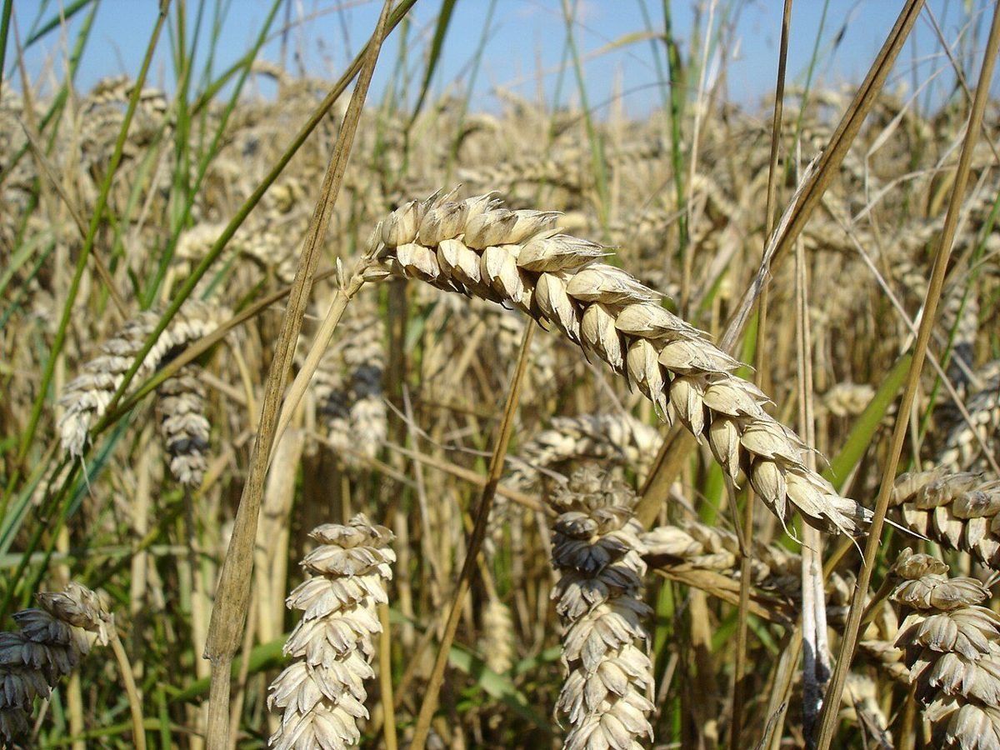

店のこと
店のこと
お店について確認できているのは、所在地とInstagramのアカウントだけです。
このページの「想像してみる」部分は、制作側が想像して書いたものです。お店の実際の様子・考え・商品とは関係がありません。
確認できていること
- 店名は「ベーカリーたま5150」、業種はパン屋
- 所在地は岐阜県土岐市土岐ヶ丘4丁目5-3(〒509-5127)
- 電話番号はなし。連絡はInstagramから
- 営業時間・定休日・メニュー・価格・ご予約・駐車場は準備中

想像してみる(制作側の創作)
数字の並べ替えで遊ぶ。
「5150」の4つの数字を、秤の液晶のように読んでみます。0515、1505、0150、5015。意味はありません。ただ、パン屋の名前に数字があると、つい何かを量りたくなる。制作側の勝手な連想です。


お店がどんなパンを作っているかは分かりません。確認でき次第、ここに書き足します。